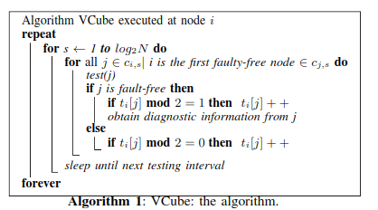
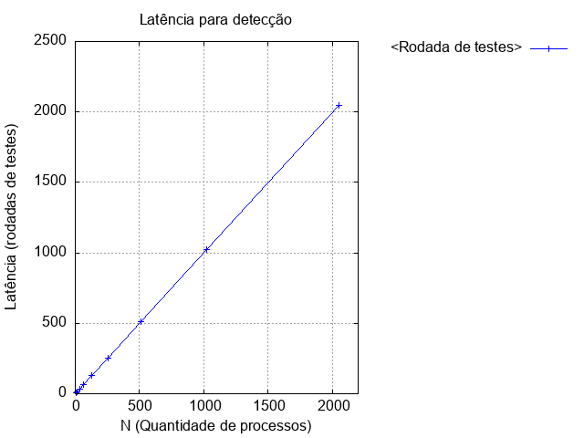
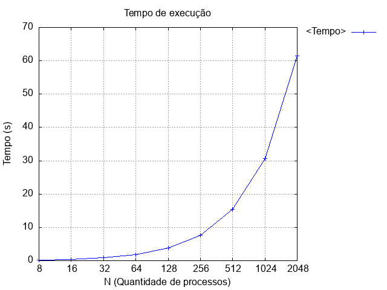
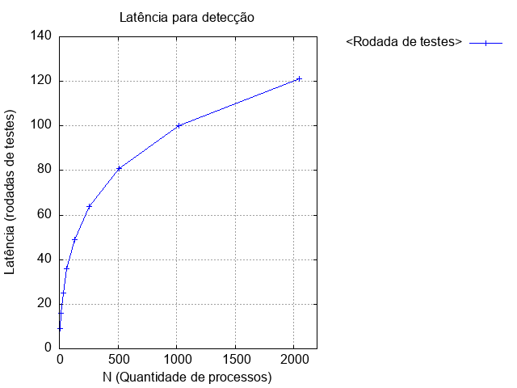
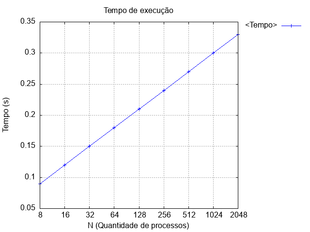

Pedro Amaral e Leonardo Becker
Trabalho Prático 0
O Trabalho 0 foi dividido em 5 partes consecutivas. Por primeiro, fomos pedidos para compilar e executar o tempo.c
tarefa0.c
log de execução 1
log de execução 2
log de execução 3
log de execução 4
Em seguida, fizemos cada processo testar o seguinte(0 testa o 1, 1 testa o 2...), para isso criamos uma variável tokenTeste, que diz respeito ao próximo processo, para calculá-lo usamos o token++, cuidando para o final, em que o último teria que testar o primeiro.
tarefa1.c
log de execução 1
log de execução 2
log de execução 3
log de execução 4
Após isso, tivemos que implementar a lógica de todo processo correto só parar de testar quando encontrar outro processo correto, o da tarefa passada encontrava um processo falho e então seu intervalo de testes terminava. Para isso foi necessário implementar um loop nos testes, quando um processo encontrava o próximo falho, fizemos tokenTeste++ para testar o próximo, o loop para quando token == tokenTeste (Deu uma volta completa).
tarefa2.c
log de execução 1
log de execução 2
log de execução 3
log de execução 4
Na próxima tarefa, precisamos implementar o vetor STATE[N] para cada processo. Ele mantém informações que o processo conhece sobre todos os outros processos, sendo cada posição o processo correspondente no anel virtual. Inicializado com 0(correto) para ele mesmo, e -1(desconhecido) para os outros processos. A cada teste feito, o processo atualiza as informações de seu STATE, se acha um processo falho, marca com 1.
tarefa3.c
log de execução 1
log de execução 2
log de execução 3
log de execução 4
Por fim do trabalho 0, precisamos fazer o vetor STATE, quando um processo testa o próximo coreto, atualiza as informações do testador sobre o estado de todos os outros processos que não foram testados no intervalo, para isso fizemos um loop do testado correto, até o testador, pegando as informações de cada um e atualizando no STATE do testador.
tarefa4.c
log de execução 1
log de execução 2
log de execução 3
log de execução 4
Por fim, podemos dizer que com a tarefa 4 implementamos com sucesso o vRing, pelos logs de teste podemos perceber que de fato está obedecendo aos tempos de latência e quantidade máxima de testes (N para os dois casos).
Trabalho Prático 1
Feito o trabalho 0, agora a missão é implementar o algoritmo vCube (v2).
Para implementá-lo, nos baseamos no artigo escrito pelo Professor., mais especificamente no algoritmo:

Nativamente por conta da biblioteca Simpl.c, o loop já executa para cada processo i, fizemos um loop em seguida que vai entre os S da função C(i,s), que chamamos de rounds. Para cada round, calculamos a função C(i,s) do processo em questão, e iteramos entre todos os j, que são frutos da função anterior. Se o testado está correto, fazemos dois processos:
Se ele estava marcado como errado (Número ímpar no campo do STATE) ou desconhecido(campo -1 no STATE), então somamos 1 na posição correspondida do state, assim se tornará um número par, que significa que está correto.
Depois disso, pegamos todo o resto dos processos do mesmo cluster do testado, e chamamos nossa função obtemDiagnostico, que vasculha pelos não testados do intervalo no cluster sobre novidades dos processos (copiando as informações do tal para o testador atual), assim poupando a quantidade de testes necessários e garantindo que a latência de detecção do algoritmo no melhor caso seja de fato logN, consequentemente a quantidade máxima de testes feitos NlogN.
Se o testado estiver falho, incrementamos 1 na sua posição referente ao STATE do testador (cuidando para o caso específico dele estar como desconhecido, assim pulando de -1 para 1 direto).
Por fim, conseguimos visualizar que cada processo realiza de fato no máximo logN testes para detectar um evento (um processo falhar). Para calcular a função C(i,s) = [j], utilizamos o algoritmo cedido pelo professor em sua página.
tempo.c
log de execução 1
log de execução 2
log de execução 3
log de execução 4
Testes de Latência e Tempo de execução - vCube
Para auxílio da análise de latência foi criado um script em shell responsável por rodar o programa para 2^i processos, sendo i pertencente ao intervalo [3,11].
Visou-se verificar o pior caso dos algoritmos vRing e vCube, para isso registrou-se o número de rodadas necessárias para que todos os processos do sistema distribuído detectem este erro simulado assim como o tempo necessário para a execução do algoritmo.
Resultados obtidos com o vRing


Neste dois primeiros gráficos, podemos perceber que a latência do algoritmo vRing é linear seguindo o esperado de O(n), enquanto o tempo de execução é exponencial.
Resultados obtidos com o vCube V2


Já com o algoritmo vCube V2, a latência é logarítmica, seguindo o esperado de O(log²(n)), enquanto o tempo de execução é linear.
Programas criados para gerar os gráficos:
latencia
tempoExecucao
Script criado para rodar os testes:
script